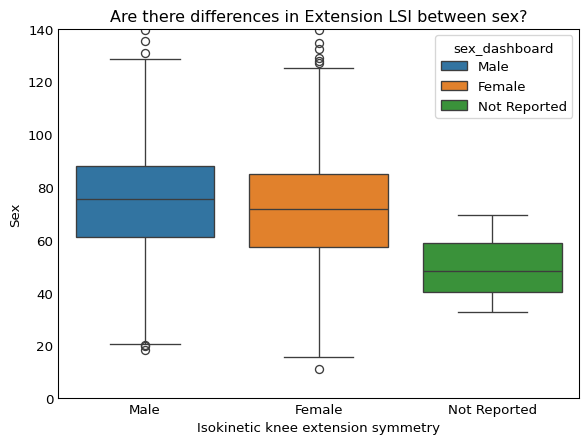

# import libraries
import matplotlib.pyplot as plt
import pandas as pd
import numpy as np
import seaborn as snsExploratory Data Analysis
Understanding and Cleaning Dataset
# Load in data
data = pd.read_csv('../data/final_data_cleaned.csv')
data.head()| record_id | redcap_event_name | sex_dashboard | age | age_group | acl_rsi | lsi_ext_isok_60 | lsi_flex_isok_60 | sh_lsi | visit_num | |
|---|---|---|---|---|---|---|---|---|---|---|
| 0 | 1 | visit_1_arm_1 | Male | 21.7 | 5.0 | 87.5 | 87.86 | 103.32 | 97.68 | 1 |
| 1 | 2 | visit_1_arm_1 | Female | 14.5 | 2.0 | 8.3 | 45.00 | 72.98 | 75.38 | 1 |
| 2 | 3 | visit_1_arm_1 | Female | 14.0 | 2.0 | 94.2 | 81.53 | 81.11 | 95.20 | 1 |
| 3 | 4 | visit_1_arm_1 | Female | 17.6 | 3.0 | NaN | 61.56 | 64.21 | 94.49 | 1 |
| 4 | 4 | visit_2_arm_1 | Female | 18.2 | 4.0 | 76.7 | 76.20 | 81.86 | 96.54 | 2 |
# Let's see the shape.
data.shape(2222, 10)There are 2222 observations and 10 features.
# Let's understand the observations? Are there 2222 separate patients?
print(data['record_id'].nunique())
results1 = data['record_id'].value_counts().describe()
table = pd.DataFrame(results1) # this will show the results as a table format
display(table) 1362| count | |
|---|---|
| count | 1362.000000 |
| mean | 1.631424 |
| std | 1.306451 |
| min | 1.000000 |
| 25% | 1.000000 |
| 50% | 1.000000 |
| 75% | 2.000000 |
| max | 15.000000 |
We can see that there are 1362 unique patients, so this means that each patient may have multiple entries. Subjects have an average of 1.6 (rounded to 2) visits.
Data Types
# Seeing what variables we are working with
# This will show categorical variables
data.select_dtypes(include=['object', 'category', 'string']).head(n=3)| redcap_event_name | sex_dashboard | |
|---|---|---|
| 0 | visit_1_arm_1 | Male |
| 1 | visit_1_arm_1 | Female |
| 2 | visit_1_arm_1 | Female |
# This will which variables are numerical/continuous
data.select_dtypes(include=['int64', 'float64']).head(n=3)| record_id | age | age_group | acl_rsi | lsi_ext_isok_60 | lsi_flex_isok_60 | sh_lsi | visit_num | |
|---|---|---|---|---|---|---|---|---|
| 0 | 1 | 21.7 | 5.0 | 87.5 | 87.86 | 103.32 | 97.68 | 1 |
| 1 | 2 | 14.5 | 2.0 | 8.3 | 45.00 | 72.98 | 75.38 | 1 |
| 2 | 3 | 14.0 | 2.0 | 94.2 | 81.53 | 81.11 | 95.20 | 1 |
Descriptive Statistics & Distributions
Extension LSI and Flexion LSI
# Let's see the summary stats for knee extension lsi and knee flexion lsi,
# this would show how symmetric the uninjured and injured limbs are when
# extending and flexing the leg
table = pd.DataFrame(data['lsi_ext_isok_60'].describe())
display(table)
table = pd.DataFrame(data['lsi_flex_isok_60'].describe())
display(table)
data['lsi_flex_isok_60'].isnull().sum()
# It seems that patients generally seem to do better in flexion than extension, as the
# mean is higher and the 75th percentile is also higher.| lsi_ext_isok_60 | |
|---|---|
| count | 2222.000000 |
| mean | 73.218780 |
| std | 22.299614 |
| min | 10.967185 |
| 25% | 58.517500 |
| 50% | 73.819601 |
| 75% | 86.407500 |
| max | 247.370000 |
| lsi_flex_isok_60 | |
|---|---|
| count | 2222.000000 |
| mean | 89.728019 |
| std | 18.970152 |
| min | 22.550000 |
| 25% | 79.000000 |
| 50% | 90.000000 |
| 75% | 100.301858 |
| max | 311.110000 |
0# This kde plot for both lsi extension and lsi flexion shows what
# their basic distributions look like
d1 = data[['lsi_ext_isok_60', 'lsi_flex_isok_60']]
sns.kdeplot(d1, multiple='stack')
plt.title('KDE of Isokinetic Knee Extension and Flexion LSI')
plt.xlim(0, 250)
plt.tick_params(axis='y', which='both',length=0)
plt.tick_params(axis='x', which='both',length=0)
plt.gca().spines['top'].set_visible(False)
plt.gca().spines['right'].set_visible(False)
plt.gca().spines['left'].set_visible(False)
# There are less flexion measurements overall compared to extension,
# and the flexion lsi values are slightly higher than extension lsi,
# though they both have unimodal peaksExamine Correlations
sns.scatterplot(data=data, x='lsi_ext_isok_60', y='lsi_flex_isok_60')
plt.title('Relationship in Flexion and Extension LSI')
plt.xlabel('Extension LSI')
plt.ylabel('Flexion LSI')
plt.tick_params(axis='y', which='both',length=0)
plt.tick_params(axis='x', which='both',length=0)
plt.gca().spines['top'].set_visible(False)
plt.gca().spines['right'].set_visible(False)
plt.gca().spines['left'].set_visible(False)
plt.gca().spines['bottom'].set_visible(False)
plt.ylim(0,200)
plt.xlim(0,200)
# By plotting the LSIs for flexion and extension, it may look like a blob at first, but
# there seems to be a little bit of a positive correlation.
# This shows that perhaps Flexion and Extension LSIs tend to be similar for many patients.
Flexion LSI Over Time
data['visit_num'].value_counts()visit_num
1 904
2 845
3 232
4 90
5 50
6 35
9 33
7 20
8 13
Name: count, dtype: int64data['lsi_flex_isok_60'].groupby(data['visit_num']).mean()visit_num
1 86.260421
2 91.778607
3 92.247613
4 93.090331
5 91.345113
6 90.966387
7 94.337597
8 93.832306
9 97.154199
Name: lsi_flex_isok_60, dtype: float64From these tables, we can see that though the number of patients decreases over vists. On average, patients’ LSI for flexion strength increases over time. Let’s see this more clearly through a line graph.
mean_lsi_f = data.groupby('redcap_event_name')['lsi_flex_isok_60'].mean().reset_index()
visit_order = ['visit_1_arm_1', 'visit_2_arm_1', 'visit_3_arm_1', 'visit_4_arm_1', 'visit_5_arm_1', 'visit_6_arm_1', 'visit_7_arm_1', 'visit_8_arm_1', 'visit_9_arm_1']
mean_lsi_f['redcap_event_name'] = pd.Categorical(
mean_lsi_f['redcap_event_name'],
categories=visit_order,
ordered=True
)
mean_lsi_f = mean_lsi_f.sort_values('redcap_event_name')
visit_map = {
'visit_1_arm_1': 1,
'visit_2_arm_1': 2,
'visit_3_arm_1': 3,
'visit_4_arm_1': 4,
'visit_5_arm_1': 5,
'visit_6_arm_1': 6,
'visit_7_arm_1': 7,
'visit_8_arm_1': 8,
'visit_9_arm_1': 9,
}
mean_lsi_f['visit_num'] = mean_lsi_f['redcap_event_name'].map(visit_map)
mean_lsi_f['visit_num'] = pd.to_numeric(mean_lsi_f['visit_num'], errors='coerce').astype('Int64')
# Plot
plt.figure(figsize=(6, 4))
plt.plot(mean_lsi_f['visit_num'].astype(str), mean_lsi_f['lsi_flex_isok_60'], marker='o')
plt.title('Mean Flexion LSI Across Visits (All Patients)')
plt.xlabel('Visit')
plt.ylabel('Mean Isokinetic Knee Flexion (sh_lsi)')
plt.grid(axis='y')
#plt.ylim(0, 2.5)Explore Relationships
Extension LSI and Sex
sns.boxplot(x='sex_dashboard', y='lsi_ext_isok_60', data=data, hue='sex_dashboard')
plt.title('Are there differences in Extension LSI between sex?')
plt.xlabel('Isokinetic knee extension symmetry')
plt.ylabel('Sex')
plt.tick_params(axis='y', which='both',length=0)
plt.tick_params(axis='x', which='both',length=0)
plt.ylim(0, 140)
plt.show()
sns.boxplot(x='sex_dashboard', y='lsi_flex_isok_60', data=data, hue='sex_dashboard')
plt.title('Are there differences in Flexion LSI between sex?')
plt.xlabel('Isokinetic knee flexion symmetry')
plt.ylabel('Sex')
plt.tick_params(axis='y', which='both',length=0)
plt.tick_params(axis='x', which='both',length=0)
plt.ylim(0, 140)
plt.show()
# We thought comparing some assessments/tests by sex might be meaningful due to
# possible recovery differences
# After making boxplots grouped by sex for lsi, the sexes seem to perform more
# similarly for flexion lsi than extension lsi.
# For extension lsi, the percentiles and mean values for female are slightly lower than
# male, though we're not sure how significant this is.
Single Hop LSI between Age Groups
sns.violinplot(data=data, y='sh_lsi', x='age_group')
plt.title('Differences in Flexion for Age Groups')
plt.xlabel('Age Group')
plt.ylabel('Isokinetic knee flexion')
plt.tick_params(axis='y', which='both',length=0)
plt.tick_params(axis='x', which='both',length=0)
plt.ylim(50, 130)
# It is important to note that the study has age groups, from younger to older
# As the ages increase, the single hop LSI decreases and then increases againdata.head()
data['sh_lsi'].groupby(data['age_group']).mean()age_group
1.0 93.300229
2.0 93.969452
3.0 92.527524
4.0 91.753894
5.0 90.619473
6.0 83.350951
7.0 83.052291
8.0 91.734000
Name: sh_lsi, dtype: float64We can see that the mean of single hop lsi per group somewhat decreases, where age groups 6 and 7 have the lowest symmetry.